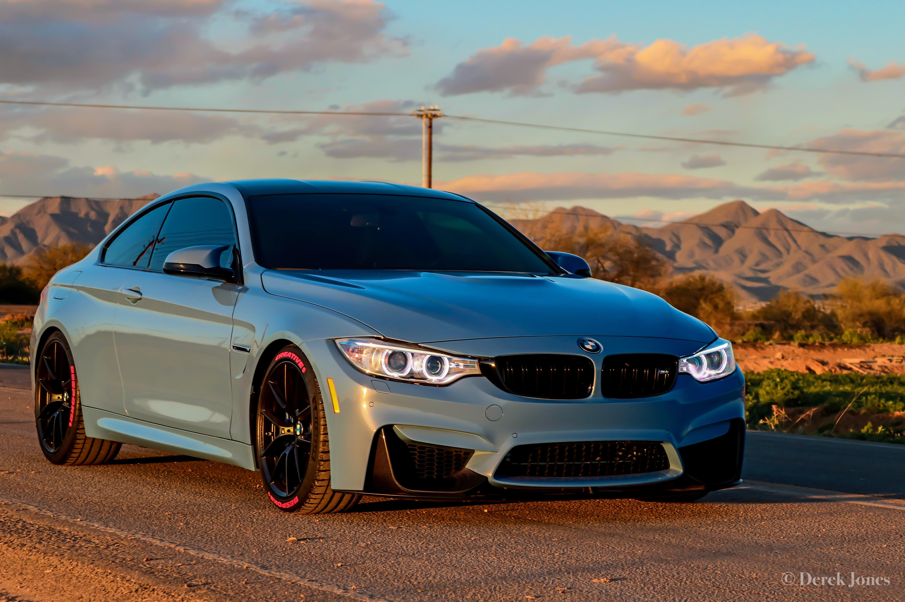

The BMW M4 is a high-performance version of the BMW 4 Series automobile developed by BMW's motorsport division, BMW M, that has been built since 2014. As part of the renumbering that splits the coupé and convertible variants of the 3 Series into the 4 Series, the M4 replaced those variants of the BMW M3. Upgrades over the standard BMW 4 Series include an upgraded engine, suspension, exhaust system, brakes and weight reduction measures including increased use of carbon fiber, such as on the roof of the car.
1. Design by primarily by Domagoj Dukec
2. 3.0 inline-six twin turbocharged engine
3. Max. output: 425 hp and 406lb of torque
4. Max. speed: 174 mph